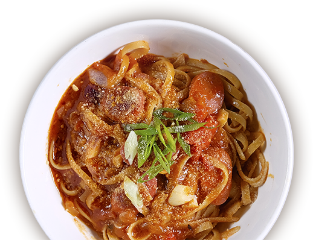
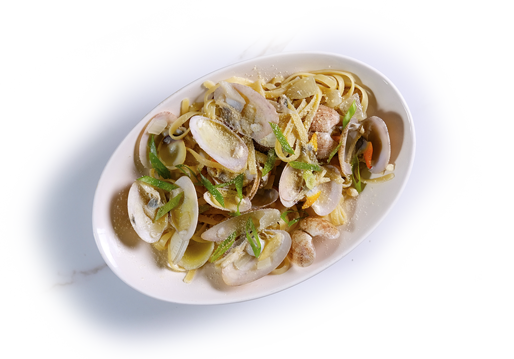
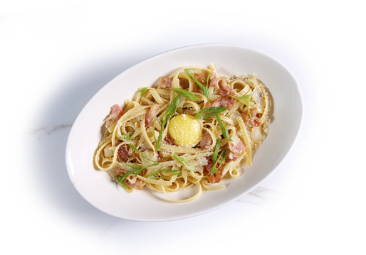
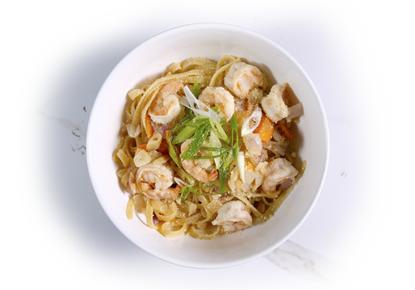
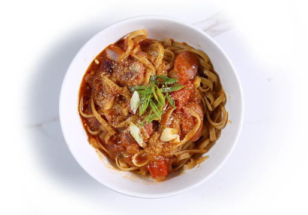

메인 메뉴
chapter 8
Pastas
파스타
모든 요리에는 후식이 무료로 제공됩니다
(쿠키아이스크림 or 커피,녹차,허브차)

David Spicy 360
본 골 레
Clams, Butter, Chicken Stock
바지락 조개와 면을 치킨육수와
함께 볶은 다음, 버터를 가미한 면요리

Adobo Belly 320
카르보나라
Smoke Bacon, Onion, Egg yolk
베이컨과 양파를 볶은 다음 닭육수와 함께
끓인 후 계란 노른자와 치즈를 토핑한 면요리

Pork Tapa 350
갈릭쉬림프
Garlic Oil, Garlic, Onions, Shrimp
마늘오일로 새우와 마늘과 다른 야채들을
볶은 후 닭육수와 함께 끓인 면요리

Ribs Bridge 360
소시지 아가비아타
Vienna Sausage, Tomato Sauce, Chillis, Butter
토마토소스와 마늘, 칠리를 넣어 후, 비엔나 소시지를
넣고 면을 넣어 끓인 후 버터를 가미한 매운면요리
